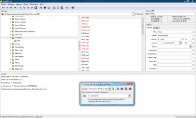

Salut à tous ! Comme vous l'avez sûrement remarqué si vous détenez un iPod, il est facile de transférer ses musiques sur son iPod, mais quasiment impossible de les transférer de l'iPod sur l'ordinateur ! iTunes ne propose aucune option, et s'il existe certains logiciels payants, voire des gratuits, comme Sharepod, ils ne sont très souvent pas compatibles Mac ou Linux. Pour contourner ce problème, nous allons les transférer à la main. Accrochez-vous, moussaillons ! :pirate:
Prenons un cas simple : vous avez acheté un baladeur de la marque à la pomme, avez transféré vos musiques préférées dessus, et vous êtes tout contents. ^^ Mais voilà, un jour, suivant une sombre loi dite de Murphy qui pourrit la vie des gens, votre disque dur tombe en panne, votre ordi crame ou il est enlevé par des aliens... et vous n'avez pas fait de sauvegardes de vos musiques ! Que faire ? recréer des listes de lecture, extraire de nouveau tous vos CD ou télécharger une nouvelle fois les musiques ? Pas pratique... Ou encore, depuis vos premières synchronisations, des fichiers se sont égarés sur votre disque dur externe ou sur des clés USB, sur votre second ordinateur... Bref c'est galère ! Vous voudriez uniformiser un peut tout ça mais voilà, ce serait long d'aller chercher toute votre bibliothèque sur cinq supports de stockage différents...
Il y a en fait deux problèmes : le premier consiste à trouver toutes les musiques sur l'iPod. Elles sont en effet quelque peu cachées (nous verrons comment y accéder facilement). Ensuite, le deuxième problème est le fait que iTunes « crypte » les noms des fichiers musicaux chargés sur le baladeur (pour éviter les doublons j'imagine, ou alors tout simplement pour ne pas trop nous faciliter la tâche de transférer les musiques de l'iPod sur l'ordi... bref...). Ce problème-là peut aussi se contourner, mais il nous faut un peu d'aide extérieure. ;)
Nous voilà devant un premier problème... en effet, le dossier contenant les chansons est un dossier caché sur l'iPod. Il faut ainsi d'abord afficher les dossiers cachés avant de pouvoir y accéder.
Sous Windows
La procédure est à peu près la même sous XP que sous Vista (je ne garantis rien pour Seven...). Il faut dans les deux cas aller dans (sur l'explorateur Windows) « Options > Options des dossiers > Onglet "Affichage" > Fichier et Dossiers cachés : Afficher les fichiers et dossiers cachés ». Sauf que voilà, Vista cache les fonctionnalités de son explorateur : il faut appuyer sur Alt pour faire apparaître la barre de fonctions (vous savez, le truc avec « Fichier », « Édition », « Affichage », etc.). Sous XP, par contre, la barre de fonctions est affichée par défaut, le cheminement à suivre est le même que sous Vista.
Sous Linux
Pour afficher les fichiers cachés sous Dolphin, Konqueror ou autres logiciels que vous utilisez pour remplacer le... superbe... explorateur Windows, il faut en général faire Ctrl + H (merci Shaac ! ;) ). Si vous voulez faire les manipulations qui vont suivre en ligne de commande, il suffit d'ajouter l'option « -a » à la commande « ls » (faites donc pour la suite, où il faudra explorer le baladeur et copier des fichiers, « ls -a » puis « cd », « ls -a » etc.).
Sous Mac
Désolé, je ne suis pas un expert en Mac... Pour afficher les dossiers cachés, je crains que Google soit votre meilleur ami... sinon on peut toujours utiliser ce rapide tutoriel : Afficher les fichiers cachés sous Mac OS X.
Sous BSD
Aucune idée... mais sachant que le logiciel que nous allons utiliser par la suite est également compatible BSD, j'aimerais juste dire à nos amis qui utilisent cet OS que les manip' sont également possibles. ^^ Voilà c'est tout...
Une fois que vous avez affiché les fichiers cachés, il faut accéder au répertoire en question sur l'iPod. Commencez par le brancher sur votre ordinateur (nooon, vraiment ?? o_O) et ouvrez-le comme une vulgaire clé USB (Ordinateur > x:Monipoddelamortquitue fin vous me comprenez... La procédure doit être similaire sur les autres OS).
Une fois que vous l'avez ouvert, entrez dans le dossier « iPod_Control » qui se trouve à la racine du lecteur multimédia. Continuez ensuite vers les dossier « Music » qui semble vide (du moins sous Vista) mais il n'en est rien. Vous vous retrouvez ensuite devant une ribambelle de dossiers F00, F01, F02, F03, F04, etc. (on peut facilement en avoir une cinquantaine sur les iPod Classic / Video !!). Si vous en ouvrez un, vous retrouverez toutes vos musiques ! Youpi ! Mais... attendez avant d'exprimer votre joie... En effet, comme vous le remarquez, les noms sont incompréhensibles ! Voici par exemple un extrait de ce que j'ai sur mon iPod (dans le dossier F00)
AHDC.m4a
ARCK.mp3
BDBS.mp3
CDJI.mp3
...
Incompréhensible ! o_O Comment savoir par exemple que AHDC correspond à Litium de Nirvana ?? Dépités, copiez tous ces dossiers sur votre ordinateur, de façon à avoir par exemple « Musique/iPod/F00 à Fxx"». Comment faire pour avoir quelques chose d'à peu près exploitable ?
Vous avez peut-être remarqué, si vous êtes sous Windows notamment, qu'à côté des noms de fichiers bizarres se trouvent certaines informations sur vos chansons : artiste, album, numéro de piste, titre si vous l'avez affiché... Ces informations s'appellent des méta-données : des données sur les données en gros. Dans un fichier MP3, vous avez ainsi une partie qui contient la musique sous forme compressée (en utilisant le codec MP3) et une partie qui contient le titre de la chanson, l'artiste, l'album, l'année où la chanson est sortie, voire même la couverture d'album ! Toutes ces informations sont conservées sur les fichiers sur l'iPod : en effet, il en a besoin. Si vous écoutez une chanson dessus, vous verrez s'afficher le titre, l'artiste, l'album, même la couverture d'album si vous l'avez choisie... Et si on utilisait ces informations pour retrouver des noms de fichiers normaux ? Évidemment, on pourrait le faire, chanson par chanson, à la main, mais il y a beaucoup beaucoup plus simple : on va utiliser un éditeur de tags MP3. Il peut gérer en une fois des milliers de fichiers et les renommer correctement d'après les tags des fichiers ! Nous sommes sauvés ! :ange:
Petite parenthèse « culturelle »
Note : la lecture de cette partie n'est absolument pas nécessaire pour comprendre la suite des opérations mais vous permet d'en apprendre un peu plus sur ces fameux tags ID3 !
Tout d'abord, les tags sont en fait un bout de fichier ajouté au début ou à la fin de la chanson à proprement parler, et qui permettent, comme je l'ai dit, de stocker certaines informations intéressantes comme le titre, l'album, etc. Il en existe plusieurs types différents, mais celui qui va nous intéresser peut-être le plus est le système de tags ID3. C'est en effet celui-là qui est utilisé par les fichiers MP3.
Il faut savoir qu'il existe plusieurs standards ID3. Le premier, le ID3v1, remonte à 1996. Il a été inventé par un certain Eric Kemp, et il consistait à insérer au début du fichier un bloc de 128 octets censés contenir l'intégralité des méta-données (à l'époque on faisait attention au moindre octet on dirait :p ). On retrouvait déjà les grandes lignes des tags pour fichiers MP3, mais il y avait certains désavantages majeurs : limite de taille (le titre de la chanson était par exemple limité à 30 caractères, de même que les titres d'albums et les commentaires), de format (uniquement les caractères de l'alphabet latin pouvaient être utilisés) et de fonctionnalités (pas de possibilité d'ajouter de pochette, genres limités à 79 puis à 147 mais pas de genres customs possibles bien évidemment, pas de possibilité d'ajout de numéro de piste). C'est d'ailleurs le manque de cette dernière fonctionnalité qui a mené, en 1997, à la sortie du standard ID3v1.1, qui était rétro-compatible avec le ID3v1 (en fait on réduisait l'espace alloué aux commentaires de deux octets, un pour le numéro de piste, l'autre pour avoir un séparateur) mais qui, du fait de sa rétro-compatibilité, limitait la taille totale des tags à 128 octets, toujours.
Ce n'est qu'en 1997 qu'un nouveau système de tags a vu le jour : l'ID3v2, qui n'a du premier standard que le nom en commun. Tout d'abord, les informations sont maintenant stockées à la fin du fichier (wouah passionnant je sais...) mais surtout, chaque champ acquiert une taille de... 16 Mo ! Et la limite pour le total des tags est poussée à 256 Mo (faudra qu'on m'explique l'utilité de 256 Mo de tags sur un fichier MP3 de 4 ou 5 Mo max par contre "-_-) ce qui est largement suffisant pour tout un tas d'informations supplémentaires comme les pochettes d'albums, les paroles de la chanson, les genres custom, etc. De plus, le support de l'Unicode arrive enfin, ce qui fait que l'on peut utiliser n'importe quel jeu de caractères pour insérer les informations. ;)
Une fois ces connaissances acquises, nous pouvons commencer à renommer en masse (en mode « batch » comme diraient les geeks...). Mais pour cela, il nous faut un éditeur de tags. Or, tous ne sont pas disponibles sous Linux ou Mac (ou BSD), et leur fonctionnement n'est pas toujours aisé. Je vais en présenter deux : un uniquement pour Windows (mais qui fait très bien ce que l'on lui demande) et un autre multi-plateforme qui s'installe moins facilement sous Windows (nécessite la bibliothèque GTK+ 2.8 ou plus récent).
Sous Windows : MP3tag v.2.42
Commencez par télécharger ce programme à cette adresse : Télécharger Mp3tag.
Une fois que vous avez téléchargé et installé ce logiciel, choisissez « français » comme langue et lancez-le. Changez de répertoire (Ctrl + D ou « Fichier > Changer répertoire »), cochez « Sous-répertoires » (très important !!) ou laissez cette option cochée, et choisissez le répertoire dans lequel vous avez copié vos dizaines de dossiers Fxx. (soit « Musique/iPod » dans notre exemple). Attendez un peu... Mp3Tag va vous afficher ensuite la liste de toutes les musiques copiées. Sélectionnez-les toutes (un petit Ctrl + A fera l'affaire) et allez sur « Convertisseur > Tag -> Nom de fichier » (et pas l'inverse !!!). Une boîte de dialogue s'ouvre, copiez le code suivant :
Cette manipulation créera, soit dans le dossier iPod (premier code) soit dans le dossier Musique (deuxième code, cela dépendra uniquement de vous : si vous voulez « mélanger » les musiques de l'iPod avec votre bibliothèque existante ou pas), un dossier par artiste, qui contiendra autant de dossiers que d'albums de cet artiste copiés, qui lui-même contiendra toutes les chansons de cet album sous la forme « titre.mp3 » ou « titre.m4a » !! Tout est rentré dans l'ordre ! Et ce en quelques clics !
Sous Linux, Mac et BSD : Easy TAG
Le logiciel que je vous présente maintenant est un peu plus complexe à installer (c'est pour cela que je recommande MP3tag aux Windowsiens, même si Easy TAG fonctionne tout aussi bien sous Linux que sous Windows). Allez tout d'abord sur cette page : site de Easy TAG. Cliquez sur « Downloads » puis lisez attentivement cette page (en anglais...). Vous remarquerez qu'il faut un certain nombre de librairies optionnelles... Mais voilà, parmi ces librairies optionnelles, il nous en faut une absolument : libmp4v2 qui permet de manipuler les fichiers MP4/AAC. Si par hasard, votre distribution Linux possède déjà cette librairie... tant mieux. Dans le cas contraire, téléchargez-la (je n'ai aucune idée si elle est disponible dans les dépôts officiels... sinon, allez sur le site le libmp4v2, téléchargez la version la plus récente (pas le truc en .asc hein "-_-), installez-la (apparemment un « ./configure; make » devrait être assez d'après le webmaster... dans tous les cas il faut le compiler à la main... bref je vous laisse le faire).
Sinon, les paquets sont disponibles à cette adresse. Pour les utilisateurs de distributions autres que Debian, il n'y a rien à faire, les autres connaissent déjà sûrement Alien. Une autre librairie qui pourrait être intéressante est id3lib, que l'on peut télécharger ici. Et évidemment, il faut aussi libid3tag, soit par les dépôts officiels, soit à cette adresse (à compiler à la main...). Une fois que tout cela est téléchargé, lancez le logiciel !
L'interface est déjà bien plus austère (et surtout, il est difficile d'installer le support du AAC sous Windows, raison pour laquelle je le déconseille aux Windowsiens), et il est également plus difficile de trouver le bon répertoire (catastrophique sous Vista même, mais cela vient du fait que les dossiers « réels » n'ont pas le même nom que les dossiers « virtuels » : ainsi, pour aller dans « MonNom/Musique », il faut aller dans « C:/Users/Mon Nom/Music », les noms de certains dossiers apparaissent en anglais (« Téléchargement » par exemple s'appelle « Downloads »...)... mais bon, premièrement c'est de la faute de Vista et deuxièmement, sous Vista on va plutôt utiliser Mp3Tag). Allez dans le bon dossier (donc Musiques/iPod) et sélectionnez tous vos fichiers. Si vous avez seulement des fichiers .MP3 et pas de .AAC ou .M4A, c'est que l'installation de libmp4v2 s'est mal passée : je ne peux que vous conseiller Google dans ce cas. Sinon, on peut toujours essayer de convertir tous les fichiers AAC en MP3 à l'aide d'un des nombreux logiciels qui peuvent le faire mais bon, ça prend beaucoup de temps...
Si tout s'est bien passé, on peut continuer : sélectionnez tous les fichiers puis allez sur « Scanner > Renommer le(s) Fichier(s) et Répertoire(s) » (si vous avez installé le logiciel en français). Dans la boîte de dialogue, copiez ce code :
..\%a\%b\%t
ou
..\..\%a\%b\%t
le premier laissera les fichiers dans le répertoire iPod, le second les mettra directement dans le dossier Musique... Ensuite, appuyez sur « Scanner les fichiers » (l'icône verte bizarre) et sauvegardez les modifications (sinon ça ne servira à rien...) en allant sur « Fichier > Sauver le(s) Fichier(s) ». Appuyez sur « Oui » dans les deux fenêtres qui apparaîtront et attendez. Si vous avez des doublons (ce que je ne vous souhaite pas...) il faut cliquer sur « Ok » à chaque fois (à moins qu'il y ait un moyen pour enlever cet avertissement...). Et normalement, c'est bon !! Vous avez réussi à récupérer vos fichiers !
Note : je ne suis pas sûr que sous Mac OS la libraire pour supporter le AAC soit disponible... Peut-être est-elle déjà incluse dans l'installateur... dans le cas contraire, on peut utiliser un logiciel qui s'occupe de ces deux étapes en une fois comme le freewareiPod Viewer.
En écrivant ce tutoriel, je me suis rendu compte d'une chose : en fait il existe un grand nombre de logiciels qui peuvent directement transférer les musiques d'un iPod vers un ordinateur, en particulier sous Mac OS X ; le logiciel Senuti semble particulièrement intéressant. Sous Windows, pas mal de logiciels existent aussi, une simple recherche Google permet d'en dénicher beaucoup d'un coup. Linux, quoique moins servi, doit aussi en posséder quelques-uns. Bon, évidemment, sous BSD, on peut toujours chercher, mais les utilisateurs de BSD ayant envie de copier les chansons de leur iPod sur l'ordi doivent être minoritaires... Pourquoi alors se compliquer la vie avec la méthode à l'éditeur de tags ?
Tout d'abord, en ce qui concerne les logiciels qui s'installent sur l'iPod, par principe, je préfère les éviter. Pourquoi ? Imaginez que Apple sorte une mise à jour du firmware : le logiciel voire même l'iPod risque(nt) de devenir inutilisable(s). Et aussi, si vous aviez oublié de faire une copie de sécurité et que vous ne pouvez plus le désinstaller, que faire si vous vendez votre iPod ? Je ne sais pas si j'ai envie de préciser sur Amazon que j'ai un iPod bidouillé avec tel ou tel soft installé dessus...
Ensuite, je fais plus confiance aux éditeurs de tags qu'aux logiciels de transfert d'iPod vers ordinateur. D'abord, il en existe bien plus ce qui augmente la concurrence et fait de l'ombre aux softs payants (mis à part sur Max OS X où se produit l'effet inverse : il y a plus de logiciels de transfert « iPod > ordinateur » gratuits que d'éditeurs de tags MP3 / AAC gratuits... dommage...) et surtout à ceux bourrés de spywares !! On a plus de chance de tomber sur un éditeur de tags gratuit et sans malware qu'un logiciel de transfert gratuit et sans malware... d'après moi. Je peux en revanche très bien comprendre le point de vue de ceux qui préfèrent utiliser des solutions tout-en-un pour gagner du temps... Mais bon, si on peut en apprendre un peu plus sur le stockage de musique, sur votre iPod et sur votre ordinateur, pourquoi s'en priver ? ;)
J'espère vous en avoir appris un peu plus sur les systèmes de tags et de méta-données utilisés par un très grand nombre de formats multimédia et surtout, j'espère vous avoir facilité la vie pour transférer vos musiques de votre iPod sur l'ordinateur. ;)
{kind=link}
{kind=link}